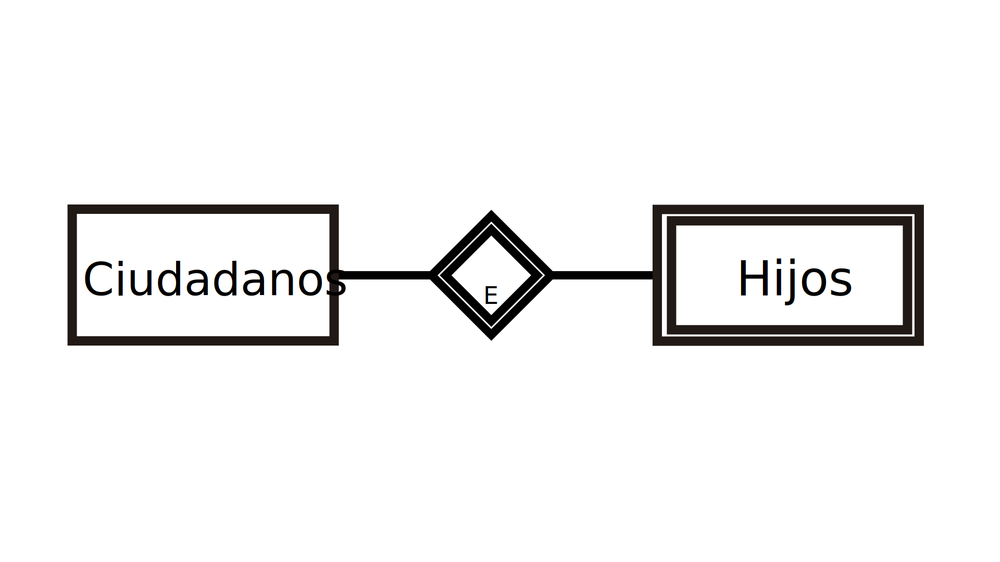
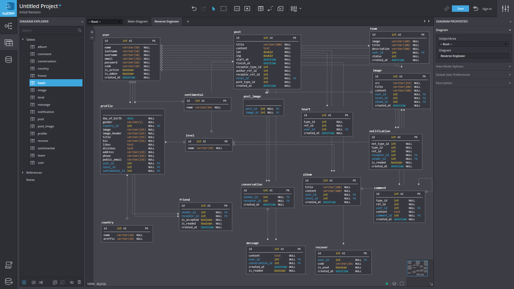

 Entidad Relación Un modelo entidad-relación es una herramienta para el modelo de datos, la cual facilita la representación de entidades de una base de datos. Fue definido por Peter Chen en 1976. Uso Se suelen desarrollar en dos fases: Se elabora el diagrama (o diagramas) entidad-relación. Se completa el modelo con listas de atributos y una descripción de otras restricciones que no se pueden reflejar en el diagrama. El modelado de datos no acaba con el uso de esta técnica. Son necesarias otras técnicas para lograr un modelo directamente implementable en una base de datos. Brevemente: Permite mostrar resultados entre otras entidades pertenecientes a las existentes de manera que se encuentre la normalidad de archivos que se almacenarán. Más Información
 Modelo Relacional Modelo relacional: es el modelo más común. Ordena los datos en tablas que se conocen como “relaciones” y, cumpliendo el formato estándar de tablas, constan de campos divididos en filas y columnas. Se pueden establecer relaciones entre los datos de las tablas, mejorando la funcionalidad de la gestión de los datos. Tras ser postuladas sus bases en 1970 por Edgar Frank Codd, de los laboratorios IBM en San José (California), no tardó en consolidarse como un nuevo paradigma en los modelos de base de datos. Su idea fundamental es el uso de relaciones. Estas relaciones podrían considerarse en forma lógica como conjuntos de datos llamados tuplas. Pese a que esta es la teoría de las bases de datos relacionales creadas por Codd, la mayoría de las veces se conceptualiza de una manera más fácil de imaginar, pensando en cada relación como si fuese una tabla que está compuesta por registros (cada fila de la tabla sería un registro o "tupla") y columnas (también llamadas "campos"). Es el modelo más utilizado en la actualidad para modelar problemas reales y administrar datos dinámicamente. Provee herramientas que garantizan evitar la duplicidad de registros. Más Información